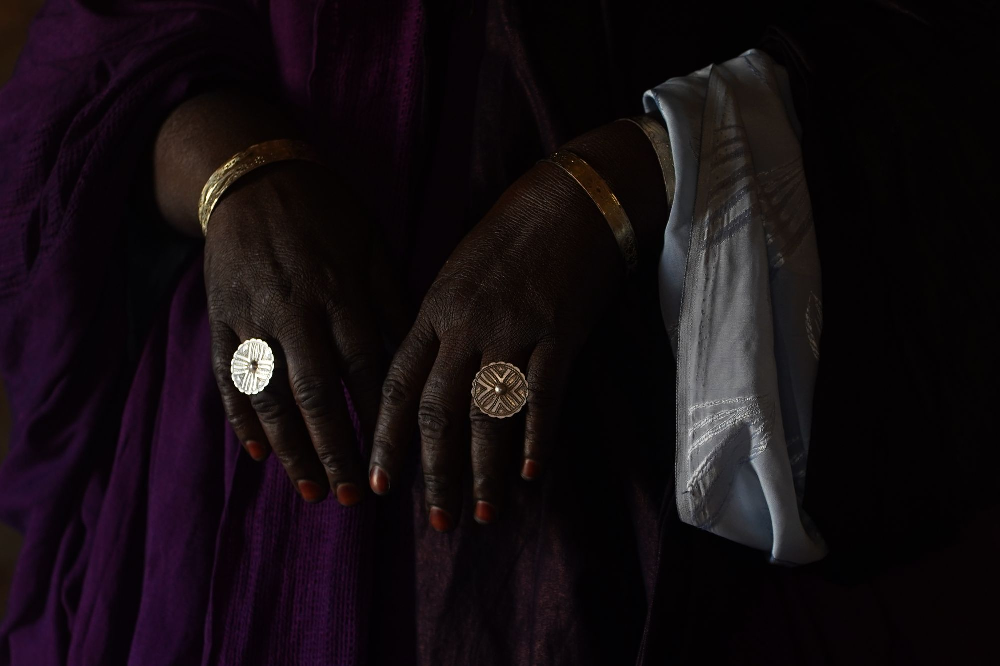

Tuareg culture
The dances, crafts and food of Djanet are part of the trip. This is what you will meet on our tours.
Folklore
Four forms of song and dance, performed by our groups during the tours.

The Tahamat group
A traditional group of 10 to 60 people depending on the event. It performs for victory celebrations, weddings, national holidays and during tours.

The Alagh group
Made up of young men only. Same dress as the Tahamat (akhbay, white and indigo chèche), plus the chemla, the belt crossed in an X over the chest. It takes part in national events and international fairs.

Tindi
Here the women are central. Seated, they keep the rhythm on metal jerrycans used as drums, while one of them marks the beat by clapping.

Aliwen
Linked to the day after a wedding. The women stand in a half-circle and sing praise songs to the rhythm of the jerrycans. In another version, camels move around them and dance to the percussion.
Crafts
Djanet's crafts express the nomadic genius. They mainly use leather, silver and natural materials.


Food
What you eat and drink in Djanet and at camp.

Taguella
Sand bread, the nomads' staple: a semolina flatbread baked under ash and hot sand, crumbled into a spicy sauce rich in meat and vegetables.
Leftate
Very thin dough, crumbled and covered with a generously spiced red meat sauce with vegetables.
Saharan mechoui
Mutton slow-cooked in a pit dug in the sand, which gives it a unique flavour and great tenderness.
Couscous
Served with a red sauce rich in meat and vegetables. A dish of sharing.
Tea
Prepared with a precise ritual, the three glasses. It is the symbol of hospitality and patience.
Igheli
A traditional drink made from dates.
Your journey to Djanet starts with a message
Tell us your dates and wishes. Mina replies personally within 24 hours.